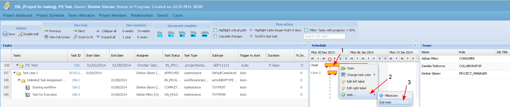
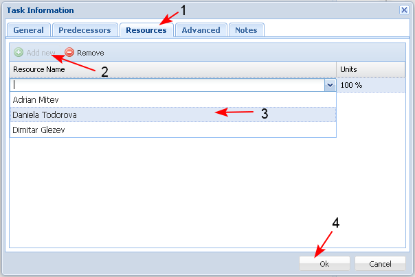
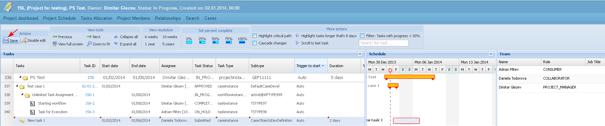
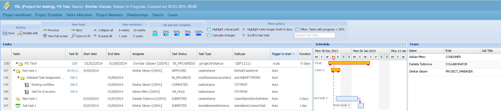
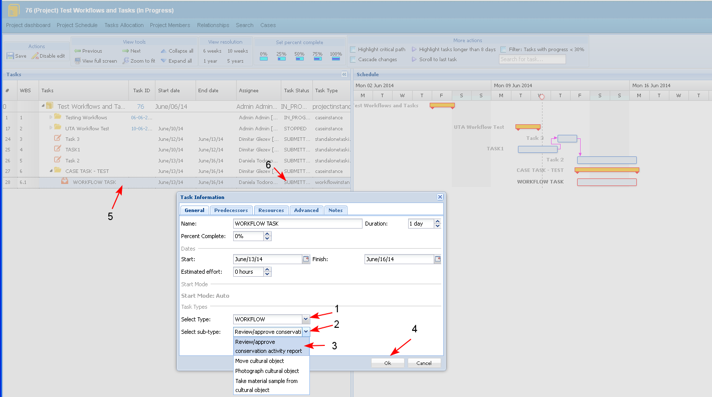
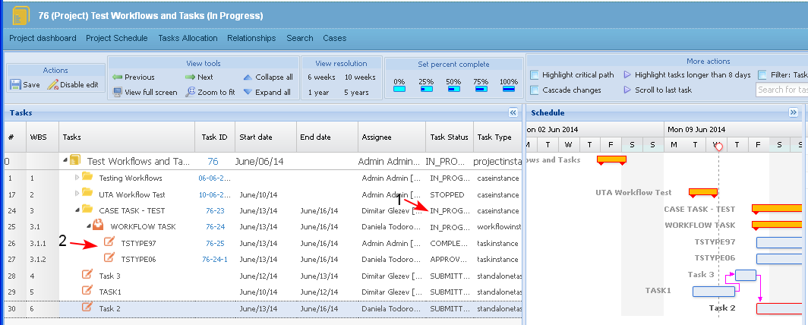

The user is able to add new tasks in the project timeline.
Starting task from a project or sub-project/ case working area and its automatic addition to the project schedule is not part of this use case.
Tasks, when created into the timeline, are just planned (future) tasks and before being started the users cannot work and progress on them.
If the created task is from the basic type "Workflow" then automatically is inserted a summary task (the workflow name) and sequence of tasks (workflow tasks) with predefined types, names, descriptions and the user have to just set up task the effort and the assignee.
Workflows that could be used in a project are defined in its definition, more over the workflows that could be inserted to a sub-project are also defined in its definition, so there is no risk for an user to insert a sequence of tasks that are not appropriate for the project.
Preconditions
- The operation could be performed only for projects in status "Submitted", "Approved", "In process" and "On-hold".
- There is no limitation on the number of tasks to be created in a project timeline.
- A task could have only one assignee (but more than 1 assignee could report and log time on a task).
- If a task has to be completed by more than one resources, then a separate task for each of them should be created.
- The PM or team leads could add tasks to the project schedule at any time when the project is ongoing.
- Each user could add sub-tasks only to tasks assigned to him/her.
- To add a new task in the project timeline the user selects an existing task and then the button "Add".
The user could add tasks of any basic type, except of basic type "Project".
The user could add unlimited number of empty rows after a selected task. Right clicking on the task, he/ she may select the button "Sub-task" immediately after selecting the button "Add" (1-2-3).

- If the selected task is a summary task then a new empty line is added right after the selected task, and the new task is indented as a sub-task. The task could be out-dented later by the user.
- If the selected task is not a summary task then a new line is added right after it and the new task has the same indention as the selected one.
- A task of basic type "Sub-project" is always indented one level after the "Project" task.
- The empty row created after a selected task is actually an empty task with: status "Submitted", Start Date - the current date, duration - 1 day (1). The user double-clicks on the task (1) and the "Task Information" (2) screen opens.

The user could enter in the "Task Information" screen (or directly in the empty row) the following task details (3-4-5-6-7):
1. Task name - a free text short name of a task.
2. Task status - Task status by default is set to "Submitted". The user may set the task status to: Submitted, Approved, InProcess, OnHold, or Completed.
3. Task description - detailed description of a task.
4. Basic task type - The user selects on of the following: Case, Workflow, Task, Milestone [Default = Task]
5. Estimated effort - the user could enter number followed by "h" or "d" depending on if the task duration is hours or days. The default task effort is 1d. The estimated effort is never calculated automatically as duration between start and end date, it is fixed by the user. [Effort and duration are different entities, a task that takes 2 hours of effort may take 2 days to complete. For example, loading software could require 20 minutes to initiate the process, a couple of 5 minutes checks while it installs, and 30 minutes to validate and configure the system at the end, so total effort is 60 minutes - but in real time the install process could take a full day.]
6. The user must enter two of the following - the third is calculated by the system:
- Planned Task start date - The user could change the start date by typing a valid date, or by selecting a date from the project calendar. When selecting from the calendar the default selection should be today.
- Planned Task Duration - A number optionally followed by "h" or "d" for hours or days, respectively - "d" shall be assumed if no "h" or "d" is specified. The Planned Task Duration may be entered by the user or calculated. When it is calculated, the minimum value is 1d.
- Planned Task end date - The user could change the end date by typing a valid date, or by selecting a date from the project calendar.
7. Specific Type - This type depends on the basic task type selected. There are different specific types per sub-projects, workflows and tasks. By default a task is created always of the specific type "Generic" (such task type exists for any of the basic task types). The user could select task type from any of the defined specific types for the current project type
8. Assignee - tasks in the project timeline could be assigned not only to project members. The PM could select assignee from the existing project members, or to search amongst all users. If the user, assigned to a task is not a project member, then he is automatically assigned as a resource to the project and becomes a member (he is assigned without a role) (1-2-3). A task assignee could be selected also by drag and drop an user from the Resource section into the task.
When the necessary data is entered, the user saves the information, clicking the button "OK" (4)

- The user saves the task in the schedule.

For more details that could be entered on a task see "Edit task details".
- The user is able to add a new task as a Successor (1-2-3) or Predecessor task.

- The user enters the necessary data for the new task

- The user saves the new task in the schedule.

- If the user adds in a case a sub task of basic type "Workflow" (1):
- The user must select the type of workflow from a list with available workflows in the Specific types field (2-3).
- When the Workflow task is saved (4), then automatically a summary task of type "Workflow" (5) is added in the project schedule and sub-tasks - the tasks of the workflow are added.
- If the selected task (the one selected before the button "Add new task" was selected) is a holder then the workflow is added right after the selected task, and is indented as a sub-task.
- If the selected task is not a holder then the workflow is added right after it and has the same indention as the selected.
- The created from the workflow task holder is with name the name of the workflow and each sub-task is with name the name of the task in the workflow.
- Each task is created in status "Submitted" (6).

- When the case is started from the case dashboard, in the project schedule the case status is changed to "In Progress" (1) and in the workflow automatically appear the defined predecessor and successor tasks, based on the workflow business process (2).
